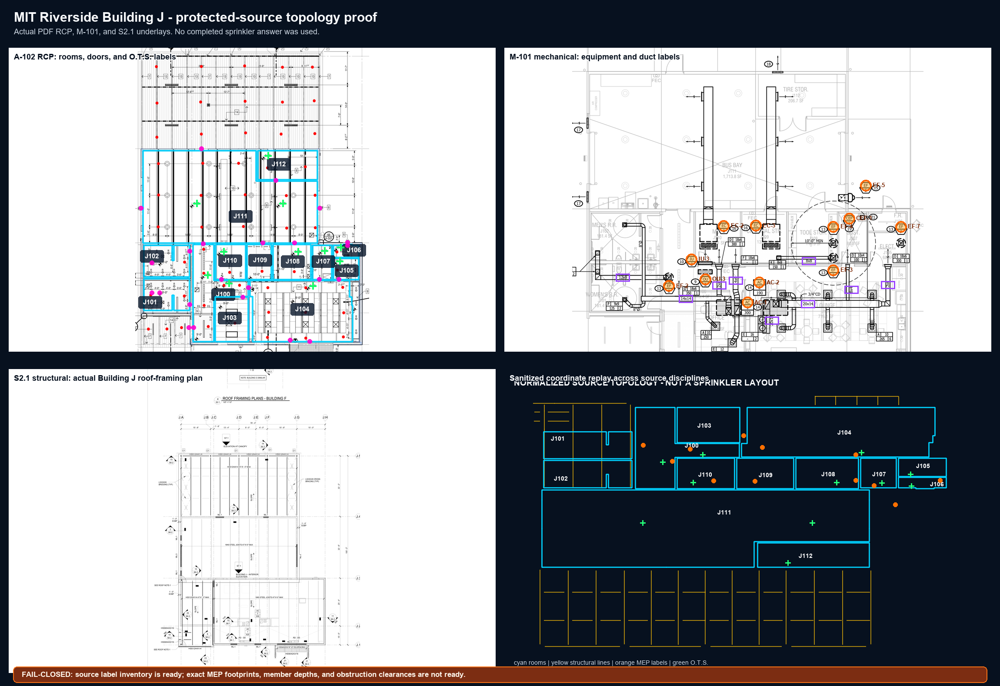

Building J protected-source topology proof
Actual A-102, M-101, and S2.1 underlays. No completed sprinkler answer was used.
Source topology inventory is ready. Exact obstruction footprints and clearances remain fail-closed.

Topology receipt: 53291d7f0354b925fbd3975da73bcee549539b5c1b67a3458e755b7a7575f771